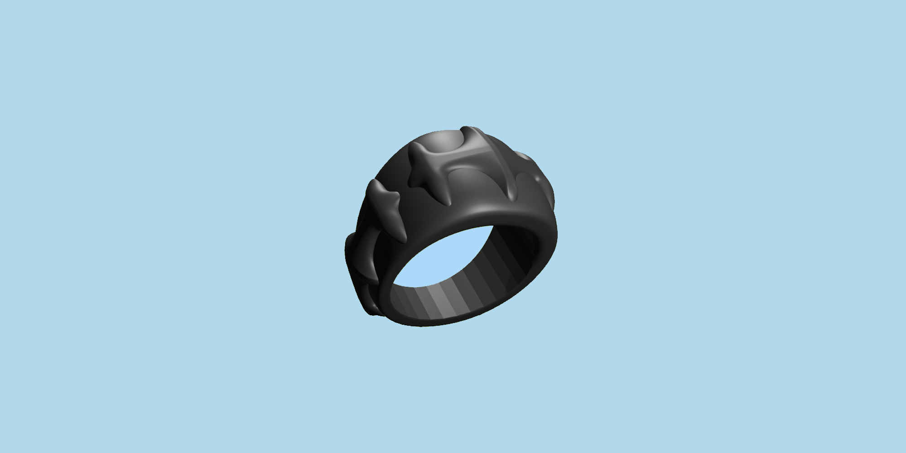

Blender
Blender Basics Adventure
Description
During my 1st internship, I had a two week period where I got to pick what I wanted to learn. Because I always had a interest in 3D Modeling I decided to dive into it and learn Blender alongside 3D printing, So I could print out the models I would be making!
Showcase
Goals
For the 2 weeks I had set 4 Goals for myself those being:
- Complete a Blender tutorial.
- Make a new burger model.
- Design and make a ring.
- 3D Print the models.
Work Process
Since I had 0 experience in Blender I decided to start with a tutorial for beginners, I ended up going with the Sword Tutorial by CGTrack for no particular reason, this tutorial was great it really helped me understand the basics of Blender.
Tutorial Time
I spent the first two days of the week following a tutorial. After completing it, I had created both the sword and a small block island. Thinking I would sculpt my upcoming burger, I decided to explore sculpting as well and managed to sculpt something vaguely resembling a face

Burger!
After grasping the basics of Blender, I dedicated the rest of the week to making a Burger model for another Chef Line's Journey. While working on the burger model, I wasn't really that fond of it and as such. I ended up creating two slightly different versions, primarily varying in approach; for instance, using a cloth simulation for the cheese. Instead of soft selecting the edges and pulling it down and bending it.
While making the burgers, I decided to adopt a 'we'll figure it out later' mentality, simply trying things to make them work and then reflecting on what could have been done more easily or simply, such as with the cheese. Despite this approach, I thoroughly enjoyed the process of making the burgers. Printing it out after making a few adjustments to turn it into a keychain was honestly pure bliss. I sliced the burger in Prusa Slicer and printed it out using Mango Yellow PLA


PS. No, I didn't end up sculpting at all. I did, however, use Geometry nodes to create the Sesame Seeds and Indents :3 for those who are interested, here you go!

Ring
I spent most of week 2 working on a design for the ring I wanted to make and ultimately landed on this signet-style ring, which incorporates some Bone-esque features that I liked! I honestly had the hardest time finding a design I liked, so underneath, you can see some of my not-so-artistic 'sketches'.
Underneath, you can see the ring I made in the end!

Reflection
Looking back, I 3D modeled in Blender for the first time and learned how to 3D print.
It was honestly really fun and surprisingly easy to 3D print, especially not having to think about any topology and just being
able to make shapes and join them together without really thinking. I'm really glad I decided to learn how to do this,
as I'll definitely continue working in Blender and might even get a 3D printer of my own since I used the one we had at the office
where I was interning at the time!
As well as that I reached all 4 of my goals I set for these 2 weeks which felt great.
